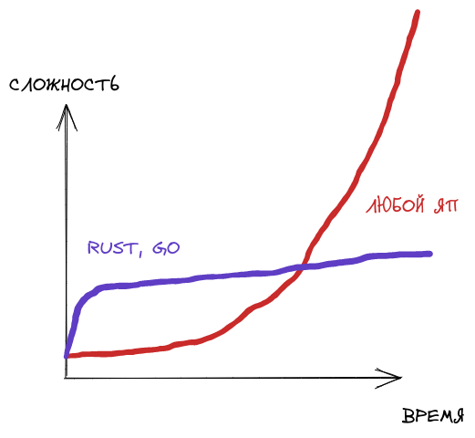

Язык FSM
Введение
Конечные автоматы часто используются в Verilog, однако код, описывающий их, может быть громоздким и избыточным. В связи с этим возникает потребность в удобном и лаконичном средстве для описания конечных автоматов на Verilog.
Выбор Rust и Nom
Rust был выбран в качестве основного языка программирования по следующим причинам:
- Возможность использования макросов, которые позволят полностью парсить предложения на этапе компиляции.
- Более плавный рост сложности программ по сравнению с другими языками (хотя это и является дискуссионным вопросом). 
Однако, Rust также имеет некоторые недостатки:
- Ограниченное количество доступных библиотек.
- Отсутствие многих популярных генераторов парсеров, таких как Bison и ANTLR.
Выбор подхода для парсера
Существует несколько вариантов реализации парсера для данной задачи:
- Полностью самописный парсер.
- Использование генератора парсеров.
- Самописный парсер с использованием комбинаторных библиотек.
Первый вариант обладает высокими временными затратами. Второй вариант ограничивает разработчика в возможностях расширения и адаптации парсера, а также может не предоставлять информативных сообщений об ошибках. Третий вариант, хоть и требует временных затрат, они меньше, чем в первом варианте, и при этом сохраняются все преимущества самописного парсера.
В результате, для реализации был выбран третий подход с использованием библиотеки Nom.
Обработка ошибок и возвращаемый результат
Текущая реализация
На данный момент парсер использует стандартный тип IResult из библиотеки Nom для обработки ошибок и возвращения результатов. Этот тип предоставляет информацию о статусе выполнения парсера и позволяет получить как успешный результат, так и информацию об ошибке.
Планы по улучшению
Хотя стандартный тип IResult уже обеспечивает базовую функциональность для обработки ошибок, планируется внедрение кастомных сообщений об ошибках, чтобы улучшить удобство использования парсера.
Кастомные сообщения об ошибках позволят предоставить более понятную и информативную обратную связь пользователю, указывая на конкретные проблемы в исходном коде и возможные пути их исправления.